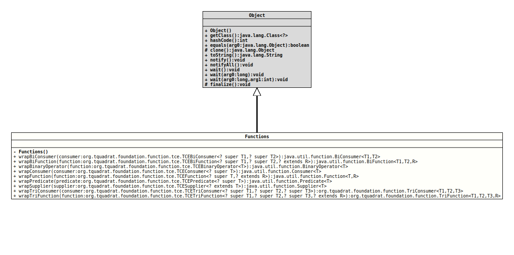

java.lang.Object
org.tquadrat.foundation.function.Functions
@UtilityClass
@ClassVersion(sourceVersion="$Id: Functions.java 820 2020-12-29 20:34:22Z tquadrat $")
public final class Functions
extends Object
Some helper methods for the use with lambdas and functional interfaces.
Using the wrapper methods in this class, you can achieve that like this:
TCE Wrapper
The methods of the functional interfaces in the packagejava.util.function
do not declare any checked exceptions - for good reasons, of course. But
sometimes, it would be nice to have that capability.Using the wrapper methods in this class, you can achieve that like this:
…
import static org.tquadrat.foundation.function.Functions.*;
…
…
Appendable appendable = …
Consumer appender = wrapConsumer( s -> appendable.append( s ) );
…
…
try
{
appender.accept( "…" );
}
catch( LambdaContainerException e )
{
throw (IOException) e.getCause();
}
…- Author:
- Thomas Thrien (thomas.thrien@tquadrat.org)
- Version:
- $Id: Functions.java 820 2020-12-29 20:34:22Z tquadrat $
- Since:
- 0.0.5
- UML Diagram
-

UML Diagram for "org.tquadrat.foundation.function.Functions"
{kind=link}
-
Field Summary
FieldsModifier and TypeFieldDescriptionstatic final BiConsumer[]An empty array ofBiConsumerobjects.static final BiFunction[]An empty array ofBiFunctionobjects.static final BinaryOperator[]An empty array ofBinaryOperatorobjects.static final Consumer[]An empty array ofConsumerobjects.static final Function[]An empty array ofFunctionobjects.static final Predicate[]An empty array ofPredicateobjects.static final Supplier[]An empty array ofSupplierobjects. -
Constructor Summary
Constructors -
Method Summary
Modifier and TypeMethodDescriptionstatic final <T1,T2> BiConsumer<T1, T2> wrapBiConsumer(TCEBiConsumer<? super T1, ? super T2> consumer) Wraps an instance ofTCEBiConsumerto an instance ofBiConsumerthat throws an instance ofLambdaContainerExceptionwith the causing exception, in case the wrapped instance emitted a checked exception.static final <T1,T2, R> BiFunction<T1, T2, R> wrapBiFunction(TCEBiFunction<? super T1, ? super T2, ? extends R> function) Wraps an instance ofTCEBiFunctionto an instance ofBiFunctionthat throws an instance ofLambdaContainerExceptionwith the causing exception, in case the wrapped instance emitted a checked exception.static final <T> BinaryOperator<T>wrapBinaryOperator(TCEBinaryOperator<T> function) Wraps an instance ofTCEBinaryOperatorto an instance ofBinaryOperatorthat throws an instance ofLambdaContainerExceptionwith the causing exception, in case the wrapped instance emitted a checked exception.static final <T> Consumer<T>wrapConsumer(TCEConsumer<? super T> consumer) Wraps an instance ofTCEConsumerto an instance ofConsumerthat throws an instance ofLambdaContainerExceptionwith the causing exception, in case the wrapped instance emitted a checked exception.static final <T,R> Function<T, R> wrapFunction(TCEFunction<? super T, ? extends R> function) Wraps an instance ofTCEFunctionto an instance ofFunctionthat throws an instance ofLambdaContainerExceptionwith the causing exception, in case the wrapped instance emitted a checked exception.static final <T> Predicate<T>wrapPredicate(TCEPredicate<? super T> predicate) Wraps an instance ofTCEPredicateto an instance ofPredicatethat throws an instance ofLambdaContainerExceptionwith the causing exception, in case the wrapped instance emitted a checked exception.static final <T> Supplier<T>wrapSupplier(TCESupplier<? extends T> supplier) Wraps an instance ofTCESupplierto an instance ofSupplierthat throws an instance ofLambdaContainerExceptionwith the causing exception, in case the wrapped instance emitted a checked exception.static final <T1,T2, T3> TriConsumer<T1, T2, T3> wrapTriConsumer(TCETriConsumer<? super T1, ? super T2, ? super T3> consumer) Wraps an instance ofTCETriConsumerto an instance ofTriConsumerthat throws an instance ofLambdaContainerExceptionwith the causing exception, in case the wrapped instance emitted a checked exception.static final <T1,T2, T3, R>
TriFunction<T1,T2, T3, R> wrapTriFunction(TCETriFunction<? super T1, ? super T2, ? super T3, ? extends R> function) Wraps an instance ofTCETriFunctionto an instance ofTriFunctionthat throws an instance ofLambdaContainerExceptionwith the causing exception, in case the wrapped instance emitted a checked exception.
-
Field Details
-
EMPTY_BinaryOperator_ARRAY
An empty array ofBinaryOperatorobjects. -
EMPTY_BiConsumer_ARRAY
An empty array ofBiConsumerobjects. -
EMPTY_BiFunction_ARRAY
An empty array ofBiFunctionobjects. -
EMPTY_Consumer_ARRAY
An empty array ofConsumerobjects. -
EMPTY_Function_ARRAY
An empty array ofFunctionobjects. -
EMPTY_Predicate_ARRAY
An empty array ofPredicateobjects. -
EMPTY_Supplier_ARRAY
An empty array ofSupplierobjects.
-
-
Constructor Details
-
Functions
private Functions()No instance allowed for this class.
-
-
Method Details
-
wrapBiConsumer
@API(status=STABLE, since="0.0.5") public static final <T1,T2> BiConsumer<T1,T2> wrapBiConsumer(TCEBiConsumer<? super T1, ? super T2> consumer) Wraps an instance ofTCEBiConsumerto an instance ofBiConsumerthat throws an instance ofLambdaContainerExceptionwith the causing exception, in case the wrapped instance emitted a checked exception.- Type Parameters:
T1- The type of the first argument taken by the consumer.T2- The type of the second argument taken by the consumer.- Parameters:
consumer- The consumer to wrap.- Returns:
- The wrapped consumer.
-
wrapBiFunction
@API(status=STABLE, since="0.0.5") public static final <T1,T2, BiFunction<T1,R> T2, wrapBiFunctionR> (TCEBiFunction<? super T1, ? super T2, ? extends R> function) Wraps an instance ofTCEBiFunctionto an instance ofBiFunctionthat throws an instance ofLambdaContainerExceptionwith the causing exception, in case the wrapped instance emitted a checked exception.- Type Parameters:
T1- The type of the first argument to the function.T2- The type of the second argument to the function.R- The type of the result of the function.- Parameters:
function- The function to wrap.- Returns:
- The wrapped function.
-
wrapBinaryOperator
@API(status=STABLE, since="0.0.5") public static final <T> BinaryOperator<T> wrapBinaryOperator(TCEBinaryOperator<T> function) Wraps an instance ofTCEBinaryOperatorto an instance ofBinaryOperatorthat throws an instance ofLambdaContainerExceptionwith the causing exception, in case the wrapped instance emitted a checked exception.- Type Parameters:
T- The type of the operands and result of the operator.- Parameters:
function- The function to wrap.- Returns:
- The wrapped function.
-
wrapConsumer
@API(status=STABLE, since="0.0.5") public static final <T> Consumer<T> wrapConsumer(TCEConsumer<? super T> consumer) Wraps an instance ofTCEConsumerto an instance ofConsumerthat throws an instance ofLambdaContainerExceptionwith the causing exception, in case the wrapped instance emitted a checked exception.- Type Parameters:
T- The type of arguments taken by the consumer.- Parameters:
consumer- The consumer to wrap.- Returns:
- The wrapped consumer.
-
wrapFunction
@API(status=STABLE, since="0.0.5") public static final <T,R> Function<T,R> wrapFunction(TCEFunction<? super T, ? extends R> function) Wraps an instance ofTCEFunctionto an instance ofFunctionthat throws an instance ofLambdaContainerExceptionwith the causing exception, in case the wrapped instance emitted a checked exception.- Type Parameters:
T- The type of the input to the function.R- The type of the result of the function.- Parameters:
function- The function to wrap.- Returns:
- The wrapped function.
-
wrapPredicate
@API(status=STABLE, since="0.0.5") public static final <T> Predicate<T> wrapPredicate(TCEPredicate<? super T> predicate) Wraps an instance ofTCEPredicateto an instance ofPredicatethat throws an instance ofLambdaContainerExceptionwith the causing exception, in case the wrapped instance emitted a checked exception.- Type Parameters:
T- The type of the input to the predicate.- Parameters:
predicate- The predicate to wrap.- Returns:
- The wrapped predicate.
-
wrapSupplier
@API(status=STABLE, since="0.0.5") public static final <T> Supplier<T> wrapSupplier(TCESupplier<? extends T> supplier) Wraps an instance ofTCESupplierto an instance ofSupplierthat throws an instance ofLambdaContainerExceptionwith the causing exception, in case the wrapped instance emitted a checked exception.- Type Parameters:
T- The type of results supplied by the supplier.- Parameters:
supplier- The supplier to wrap.- Returns:
- The wrapped supplier.
-
wrapTriConsumer
@API(status=STABLE, since="0.0.5") public static final <T1,T2, TriConsumer<T1,T3> T2, wrapTriConsumerT3> (TCETriConsumer<? super T1, ? super T2, ? super T3> consumer) Wraps an instance ofTCETriConsumerto an instance ofTriConsumerthat throws an instance ofLambdaContainerExceptionwith the causing exception, in case the wrapped instance emitted a checked exception.- Type Parameters:
T1- The type of the first argument taken by the consumer.T2- The type of the second argument taken by the consumer.T3- The type of the third argument taken by the consumer.- Parameters:
consumer- The consumer to wrap.- Returns:
- The wrapped consumer.
-
wrapTriFunction
@API(status=STABLE, since="0.0.5") public static final <T1,T2, TriFunction<T1,T3, R> T2, wrapTriFunctionT3, R> (TCETriFunction<? super T1, ? super T2, ? super T3, ? extends R> function) Wraps an instance ofTCETriFunctionto an instance ofTriFunctionthat throws an instance ofLambdaContainerExceptionwith the causing exception, in case the wrapped instance emitted a checked exception.- Type Parameters:
T1- The type of the first argument taken by the function.T2- The type of the second argument taken by the function.T3- The type of the third argument taken by the function.R- The type of the result of the function.- Parameters:
function- The function to wrap.- Returns:
- The wrapped function.
-